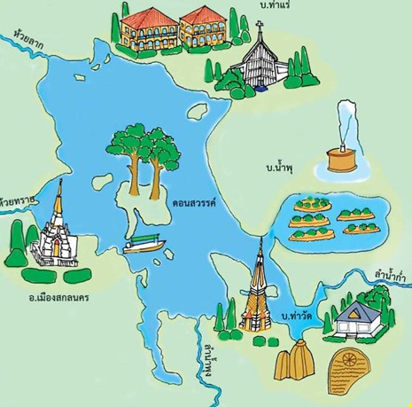

- อายุสมัย:
- แหล่งที่พบ:
บ้านท่าวัด จ.สกลนคร
แหล่งเรียนรู้วัตถุโบราณยุคก่อนประวัติศาสตร์และศิลปะบ้านท่าวัดเสมือนจริง 3 มิติ (3D)
เลื่อนดูทีละหน้าให้ครบทั้ง 24 รายการ และกดเปิดดูโมเดล 3 มิติได้ทุกรายการ
เรื่องราวทางโบราณคดีและวิถีชีวิตผู้คนริมฝั่งหนองหารสกลนครที่มีพัฒนาการยาวนานนับร้อยปี
"บ้านท่าวัด" เป็นชุมชนโบราณขนาดใหญ่ที่ผู้คนตั้งถิ่นฐานริมหนองหารมาตั้งแต่สมัยก่อนประวัติศาสตร์ ต่อเนื่องมายังสมัยวัฒนธรรมทวารวดี วัฒนธรรมขอม และวัฒนธรรมล้านช้าง บริเวณนี้เคยเป็นเมืองโบราณที่รุ่งเรืองมาก่อนสมัยรัตนโกสินทร์ตอนต้น จากนั้นจึงได้กลายเป็นเมืองร้างไปชั่วคราว
การตั้งถิ่นฐานในปัจจุบันเริ่มขึ้นเมื่อราว 170 กว่าปีที่แล้ว โดยบรรพบุรุษกลุ่มแรกเชื้อสายลาวได้กลับเข้ามาตั้งถิ่นฐานริมหนองหาร ต่อมาเริ่มมีกลุ่มคนหลากหลายวัฒนธรรมและชาติพันธุ์อพยพหนีความแห้งแล้งเข้ามาเพิ่มเติม ทั้งชาวญ้อ ชาวกะเลิง (จากบ้านงิ้วด่อน) รวมถึงผู้ไท โซ่ และลาว (จากบ้านหนองผือ) จนหลอมรวมกลายเป็นชุมชนบ้านท่าวัดที่อยู่ร่วมกันอย่างกลมกลืน
ก่อน พ.ศ. 2500 ชุมชนแห่งนี้ปกครองในฐานะ "ตำบลท่าวัด" มีขุนช้วนเป็นกำนันคนแรก ภายหลังจึงถูกลดฐานะเป็นหมู่บ้านในปกครองของตำบลดงชน และต่อมาได้ย้ายมาสังกัดตำบลเหล่าปอแดงในปัจจุบัน

บ้านท่าวัดมีแหล่งรวบรวมจัดแสดงโบราณวัตถุและศิลปวัตถุที่สำคัญภายในวัด 2 แห่ง
สร้างขึ้นในสมัยพระเจ้าพรหมเทโวโพธิสัตว์ ภายหลังจากที่หมู่บ้านรกร้างไปชั่วระยะหนึ่ง ราษฎรได้ร่วมใจกันสร้างวัดขึ้นใหม่ชื่อ "วัดแจ้งสมสะอาด" และเปลี่ยนชื่อในภายหลังเป็น "วัดมหาพรหมโพธิราช" ตามนามของอดีตเจ้าเมือง
ภายในบริเวณวัดถัดจากพระอุโบสถไปทางทิศเหนือ มีอาคารพิพิธภัณฑ์ที่เก็บรักษาซากฐานอาคารศิลาแลงและเนินอิฐกว้าง 10 เมตร ยาว 25 เมตร (สันนิษฐานว่าเป็นสิมหรืออุโบสถเก่า) พร้อมโบราณวัตถุชิ้นสำคัญ เช่น พระพุทธรูปหินทรายสมัยทวารวดี (ปางสมาธิราบบนฐานบัวหงาย สูงประมาณ 120 ซม.) และ พระพุทธรูปหินทรายสมัยลพบุรี (ทรงเครื่องน้อย ประทับนั่งขัดสมาธิราบ สูงประมาณ 60 ซม. มีแผ่นหินทรายด้านหลัง) รวมทั้งชิ้นส่วนศิลาแลงกระจัดกระจายรอบบริเวณ

เป็นหนึ่งในแหล่งโบราณคดีสำคัญที่มีหลักฐานใบเสมาในสภาพสมบูรณ์และตั้งอยู่ในตำแหน่งเดิมไม่เคยถูกย้าย คือ กลุ่มใบเสมาหินทรายแดงและเทาสมัยทวารวดี สลักลวดลายสันสถูปและหม้อน้ำปูรณะฆฏะ ปักเป็นคู่ซ้อนกัน 2 ใบตามทิศทั้ง 8 รวมทั้งหมด 16 ใบ และใบเสมาแบบเดี่ยวอีก 3 ใบ ปักล้อมรอบเนินฐานอาคารศิลาแลงโบราณ
นอกจากนี้ยังพบไหดินเผาเคลือบศิลปะล้านช้างที่ใช้บรรจุกระดูก ชิ้นส่วนพระพุทธรูปและประติมากรรมรูปเคารพทำจากหินทราย ชิ้นส่วนเครื่องประกอบสถาปัตยกรรมแบบเขมร รวมถึงศิลาจารึกที่ระบุนามผู้สร้าง คือ พระมหาพรหมเทโวโพธิสัตว์ และชื่อวัดเดิมว่า "วัดกลางเชียงใหม่หนองหานคามเขต" ซึ่งเป็นที่มาของชื่อวัดกลางศรีเชียงใหม่ในปัจจุบัน โดยสมเด็จพระกนิษฐาธิราชเจ้า กรมสมเด็จพระเทพรัตนราชสุดาฯ สยามบรมราชกุมารี ได้เสด็จทอดพระเนตรในปี พ.ศ. 2532 ทำให้มีการสร้างอาคารพิพิธภัณฑ์ท้องถิ่นขึ้นในปี พ.ศ. 2534 ด้วยความร่วมมือของจังหวัดสกลนครและการท่องเที่ยวแห่งประเทศไทย (ททท.)

ชาวบ้านท่าวัดนับถือพระพุทธศาสนาควบคู่กับการนับถือ "ผีปู่ตา" ที่คอยปกป้องรักษาเรือกสวนไร่นา และยึดมั่นในประเพณี "ฮีตสิบสอง คลองสิบสี่" โดยมีประเพณีที่โดดเด่นและสืบทอดกันยาวนานคือ "ประเพณีแข่งเรือยาว" ซึ่งบ้านท่าวัดถือเป็นหมู่บ้านแรกเริ่มริเริ่มการแข่งเรือในแถบลุ่มน้ำหนองหาร
ตำนานเรือยาวบ้านท่าวัดสืบทอดผ่านเรือที่ชื่อว่า "เรือนางคำไหล" ทั้งหมด 4 ยุค: ลำที่ 1 คือ เรือนางก้อนคำไหล โดยผู้ใหญ่บ้านคนแรก (นายไก่ นนท์สะเกษ), ลำที่ 2 คือ เรือนางคำไหล โดยนายทอง ดาบสีพาย, ลำที่ 3 คือ เรือนางคำไหลหงษ์ทะยาน โดยนายเกียน หอมจัน, และลำที่ 4 ลำปัจจุบันคือ "เรือนางพญาคำไหล" โดยนายชู ชมจันทร์ ประเพณีนี้ผสมผสานพิธีกรรมอย่างแม่ย่านางเรือ (คนทรงชุดขาวโพกหัวทำพิธีเพื่อชัยชนะ) และการฟ้อนรำอันเป็นเอกลักษณ์ของฝีพายบนหัวเรืออย่างสนุกสนาน
เรายินดีต้อนรับทุกท่านสู่ชุมชนท่องเที่ยวเชิงวัฒนธรรมบ้านท่าวัด ริมฝั่งหนองหารสกลนคร
บ้านท่าวัด ตำบลเหล่าปอแดง อำเภอเมือง จังหวัดสกลนคร 47000
เปิดชมโบราณคดีและกราบสักการะหลวงพ่อพระประธานทุกวัน เวลา 08.00 น. - 17.00 น.
องค์การบริหารส่วนตำบลเหล่าปอแดง หรือ กลุ่มวิสาหกิจท่องเที่ยวท่าวัดสกลนคร
ริมแม่น้ำหนองหาร ตำบลเหล่าปอแดง จ.สกลนคร
กดตรงนี้เพื่อเปิดแผนที่นำทางบนมือถือ